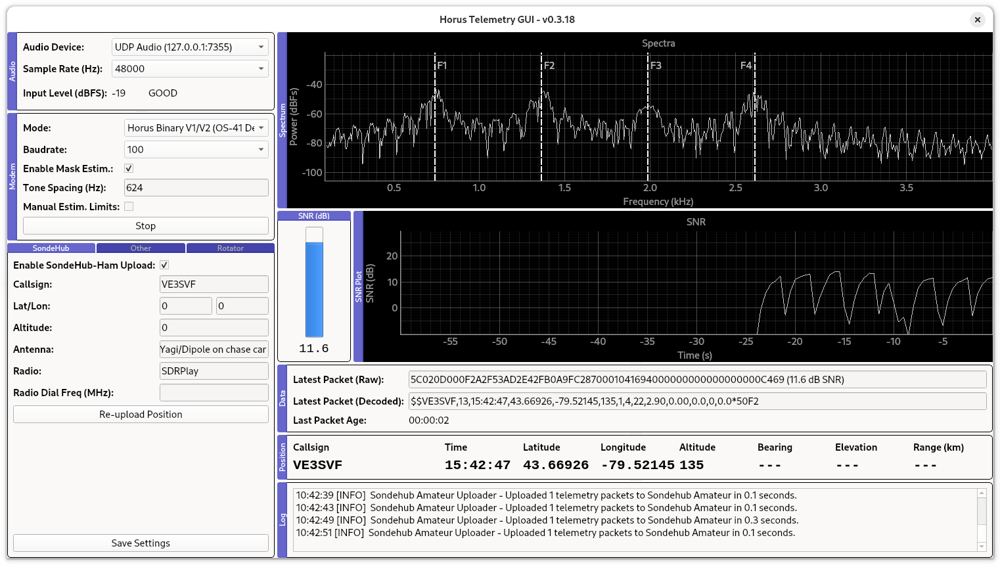
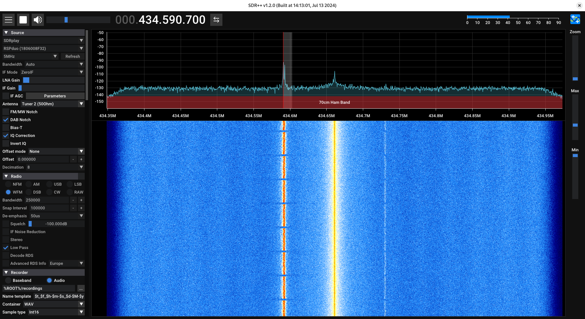
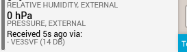

Receiving Horus 4FSK Telemetry from High-Altitude Balloons in Toronto
Horus 4FSK is a standard telemetry protocol that we often use for balloon launches here in Toronto. Many people have emailed me asking how to contribute to receiving telemetry, so this is a quick guide on how to set up your station. We always appreciate help receiving telemetry: during the rather stressful period leading up to launch, telemetry is just another thing that can go wrong. Having other people help out greatly reduces the load onto the launch team!
What you need:
To receive Horus 4FSK telemetry, you will need:
- A suitable antenna (e.g. a Yagi or a discone) mounted on your vehicle or stationary setup.
- An SDR (like an RTL-SDR) or a SSB-capable radio. SSB radios can work, but are discouraged because of some launches using high-speed telemetry.
- A computer with the decoding software installed (horus-gui).
Set up your antenna and start your radio
This will vary from setup to setup, but mount your antenna in a location with a clear view of the sky. Ensure it is securely attached and properly oriented towards the balloon to maximize signal reception. If you're using an SSB radio, use whatever method is best to stream audio from the radio into your computer. Otherwise, if using an SDR, create a UDP stream to the application.
Tune the radio signal
Launch horus-gui, which can be downloaded from here. Then, tune in to the radio signal from the balloon. It will look something like below:
Ensure that you see four peaks in horus-gui. If the peaks don't have lines over them (or you only see three), adjust the tuning on your radio until you see four.
Start receiving and uploading telemetry
At this point, horus-gui should look similar to what the image at the top looks like. You should also see messages in the log about uploading telemetry to SondeHub Amateur. You should also see your station name in the "uploaders" section.
